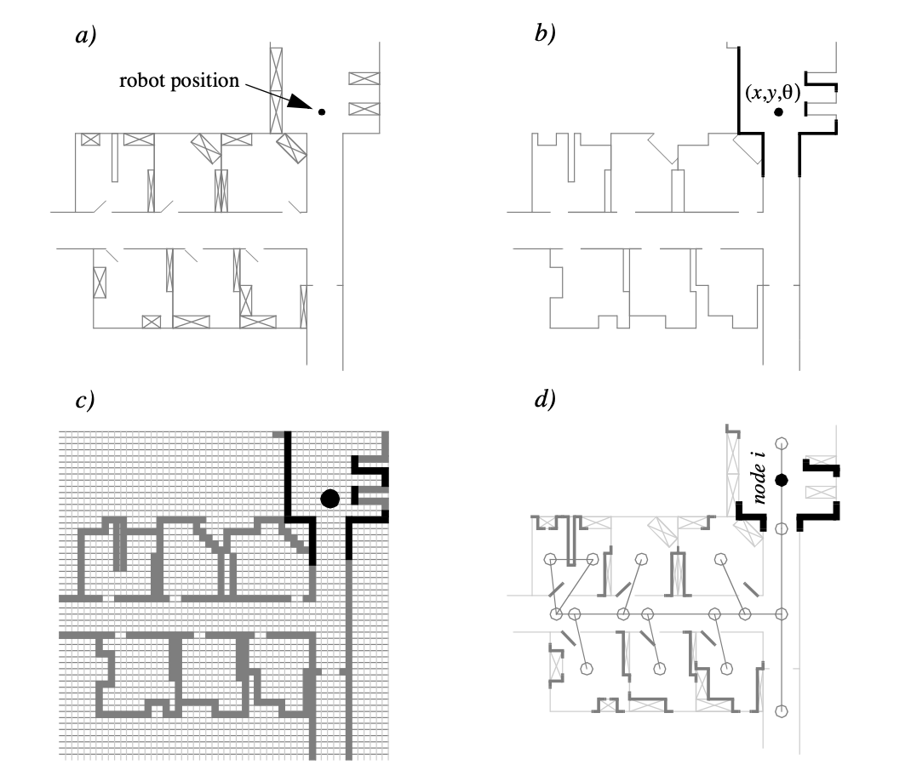

The fundamental issue which differentiates different types of map-based localisation systems is the issue
of
- 1.
- representation of the environment, or
- 2.
- the map.
These are the design questions for map representation. The robot
must also have a representation of its
These are the design
questions for belief representation. Decisions along these two (
- Single
-
Former covers solutions in which the robot postulates its unique position,
- Multiple
-
Enables a AMRAutonomous Mobile RoboticsAutonomous Mobile Robotics to describe the degree to which it is uncertain about its position.
The single hypothesis belief representation is the most direct possible postulation of an AMRAutonomous Mobile RoboticsAutonomous Mobile Robotics’s position [†]Reuter, J. Scan-and featurebased multiple hypothesis tracking for mobile robot localization: a data fusion approach in IEEE SMC’99 Conference Proceedings. 1999 IEEE International Conference on Systems, Man, and Cybernetics (Cat. No. 99CH37028) 4 (1999), 714–719.
Given some environmental map, the robot’s belief about position is expressed as a single unique point on the map.

In Fig. 1.7, three (
Just as decision-making is facilitated by a single-position hypothesis, so updating the robot’s belief regarding position is also facilitated, since the single position must be updated by definition to a new, single position. The challenge with this position update approach, which ultimately is the principal disadvantage of single-hypothesis representation, is that robot motion often induces uncertainty due to effectory and sensory noise.
Forcing the position update process to always generate a single hypothesis of position is challenging and, often, impossible.
In the case of multiple hypothesis beliefs regarding position, the robot tracks NOT just a single
possible position but a possibly
It may be useful, however, to incorporate some ordering on the possible robot positions, capturing the fact that some robot positions are likelier than others. A strategy for representing a continuous multiple hypothesis belief state along with a preference ordering over possible positions is to model the belief as a mathematical distribution. For example, [42,47] notate the robot’s position belief using an X,Y point in the two-dimensional environment as the mean plus a standard deviation parameter , thereby defining a Gaussian distribution. The intended interpretation is that the distribution at each position represents the probability assigned to the robot being at that location. This representation is particularly amenable to mathematically defined tracking functions, such as the Kalman Filter, that are designed to operate efficiently on Gaussian distributions.
An alternative is to represent the set of possible robot positions, not using a single Gaussian probability density function, but using discrete markers for each possible position. In this case, each possible robot position is individually noted along with a confidence or probability parameter (See Fig. (5.11)). In the case of a highly tessellated map this can result in thousands or even tens of thousands of possible robot positions in a single belief state.
The key advantage of the multiple hypothesis representation is that the robot can explicitly maintain uncertainty regarding its position. If the robot only acquires partial information regarding position from its sensors and effectors, that information can conceptually be incorporated in an updated belief.
A more subtle advantage of this approach revolves around the robot’s ability to explicitly measure its own degree of uncertainty regarding position. This advantage is the key to a class of localisation and navigation solutions in which the robot not only reasons about reaching a particular goal, but reasons about the future trajectory of its own belief state. For instance, a robot may choose paths that minimise its future position uncertainty. An example of this approach is [90], in which the robot plans a path from point A to B that takes it near a series of landmarks in order to mitigate localisation difficulties. This type of explicit reasoning about the effect that trajectories will have on the quality of localisation requires a multiple hypothesis representation.
One of the fundamental disadvantages of the multiple hypothesis approaches involves decision-making. If the robot represents its position as a region or set of possible positions, then how shall it decide what to do next? Figure 5.11 provides an example. At position 3, the robot’s belief state is distributed among 5 hallways separately. If the goal of the robot is to travel down one particular hallway, then given this belief state what action should the robot choose?
The challenge occurs because some of the robot’s possible positions imply a motion trajectory that is inconsistent with some of its other possible positions. One approach that we will see in the case studies below is to assume, for decision-making purposes, that the robot is physically at the most probable location in its belief state, then to choose a path based on that current position. But this approach demands that each possible position have an associated probability.
In general, the right approach to such a decision-making problems would be to decide on trajectories that eliminate the ambiguity explicitly. But this leads us to the second major disadvantage of the multiple hypothesis approaches. In the most general case, they can be computationally very expensive. When one reasons in a three dimensional space of discrete possible positions, the number of possible belief states in the single hypothesis case is limited to the number of possible positions in the 3D world. Consider this number to be N. When one moves to an arbitrary multiple hypothesis representation, then the number of posN sible belief states is the power set of N, which is far larger: 2 . Thus explicit reasoning about the possible trajectory of the belief state over time quickly becomes computationally untenable as the size of the environment grows. There are, however, specific forms of multiple hypothesis representations that are somewhat more constrained, thereby avoiding the computational explosion while allowing a limited type of multiple hypothesis belief. For example, if one assumes a Gaussian distribution of probability centered at a single position, then the problem of representation and tracking of belief becomes equivalent to Kalman Filtering, a straightforward mathematical process described below. Alternatively, a highly tessellated map representation combined with a limit of 10 possible positions in the belief state, results in a discrete update cycle that is, at worst, only 10x more computationally expensive than single hypothesis belief update.
In conclusion, the most critical benefit of the multiple hypothesis belief state is the ability to maintain a sense of position while explicitly annotating the robot’s uncertainty about its own position. This powerful representation has enabled robots with limited sensory information to navigate robustly in an array of environments, as we shall see in the case studies below.